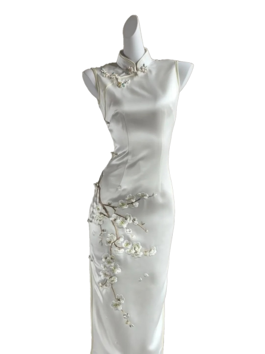
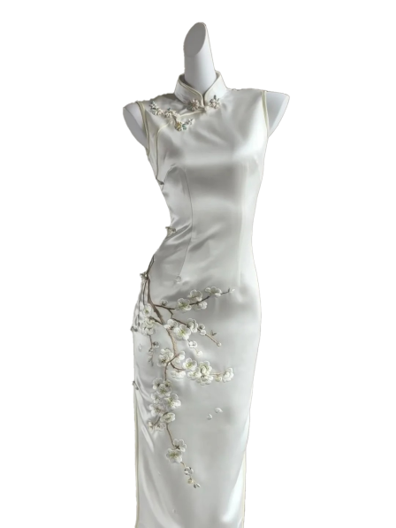

面料特点
真丝旗袍特点：100%天然蚕丝，质地柔软顺滑，光泽华丽；透气性佳，冬暖夏凉；亲肤舒适，不易起静电；弹性适中，悬垂感好；色彩鲜艳持久；高档奢华，适合正式场合；需精细保养，避免水洗和暴晒；价格较高但品质优越。
面料
真丝，又称蚕丝，是由蚕茧抽丝制成的天然蛋白质纤维，质地柔软光滑，具有优良的吸湿性和透气性，光泽华丽自然，是高档面料的代表
注意事项
真丝旗袍保养：避免长时间阳光直射；防汗渍、香水直接接触；穿着时避免尖锐物刮擦；专业干洗或手洗（中性皂液、冷水、轻柔揉搓）；湿时不拧扭，阴凉处平铺晾干；低温熨烫（垫布、反面熨）；悬挂存放于通风处，避免与粗糙物接触；定期通风。


 
